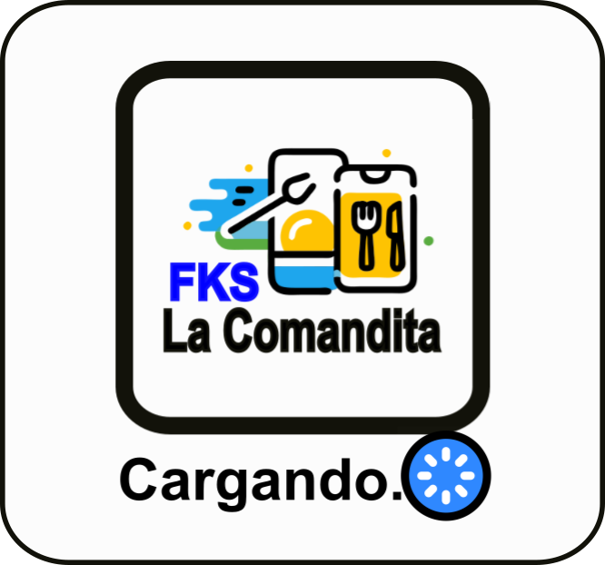

<div class="container">
  <ng-container *ngIf="yaTieneMesaAsignada && mesaAsignada !== undefined">
    <h1>
      Tu mesa asignada es la número <strong>{{ mesaAsignada.numero }}</strong>
    </h1>
    <h2>Escanea el QR de tu mesa para realizar tu pedido</h2>
    <button
      id="escanerIngreso"
      class="botonPrincipal botonScan"
      (click)="escanearQrMesa()"
    >
      <ion-icon name="qr-code-outline" class="iconScan"></ion-icon>
    </button>
  </ng-container>

  <h1 *ngIf="!estaEnListaDeEspera">¡Bienvenido!</h1>
  <h2 *ngIf="estaEnListaDeEspera && !yaTieneMesaAsignada">
    Esperando a que le asignen una mesa...
  </h2>

  <div class="button-container">
    <!-- Ingreso a la lista de espera -->
    <button
      *ngIf="!estaEnListaDeEspera"
      class="botonPrincipal button"
      (click)="handleListaDeEspera(true)"
    >
      <ion-icon name="alarm-outline" size="large"></ion-icon>
      Ingresar a la lista de espera
    </button>

    <button
      *ngIf="estaEnListaDeEspera && !yaTieneMesaAsignada"
      class="botonPrincipal button"
      (click)="handleListaDeEspera(false)"
    >
      <ion-icon name="walk-outline" size="large"></ion-icon>
      Abandonar la lista de espera
    </button>

    <!-- ENCUESTAS -->
    <!-- <button
    class="botonPrincipal button"
    (click)="irACompletarEncuestas()"
  >
    <ion-icon name="clipboard-outline" size="large"></ion-icon>
    Completar una encuesta
  </button> -->
    <!-- Si es Cliente, pueden ver y completar encuestas -->
    <!-- <button
      *ngIf="
        authService.tipoUsuario !== 'Anónimo' &&
        authService.tipoUsuario !== 'Sin asignar' &&
        estaEnListaDeEspera
      "
      class="botonPrincipal button"
      (click)="irACompletarEncuestas()"
    >
      <ion-icon name="clipboard-outline" size="large"></ion-icon>
      Completar una encuesta
    </button> -->
    <!-- Si es anónimo, solo puede ver resultados -->
    <button
      class="botonPrincipal button"
      (click)="irAResultadosDeLasEncuestas()"
    >
      <ion-icon name="stats-chart-outline" size="large"></ion-icon>
      Ver resultados de encuestas previas
    </button>
  </div>
</div>

<ngx-spinner
  bdColor="rgba(0, 0, 0, 0.8)"
  template=""
></ngx-spinner>
